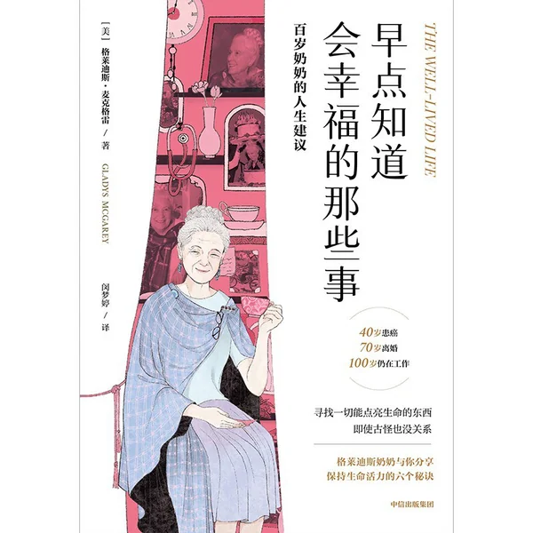
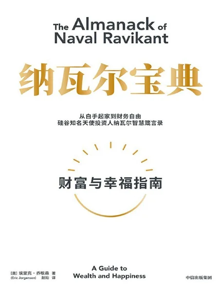
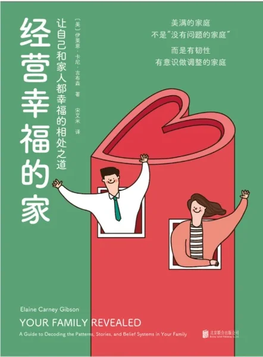
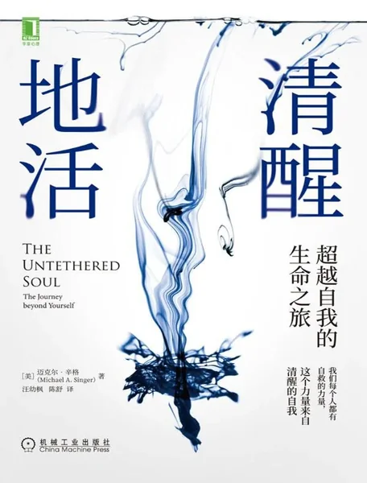
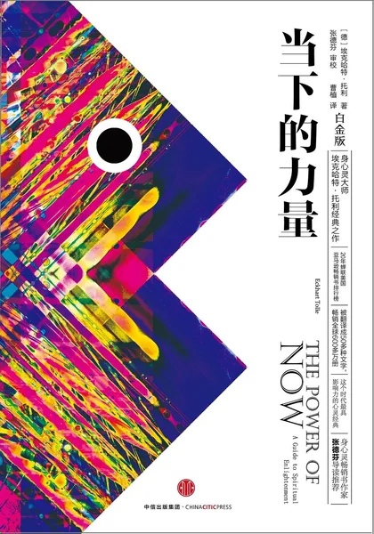
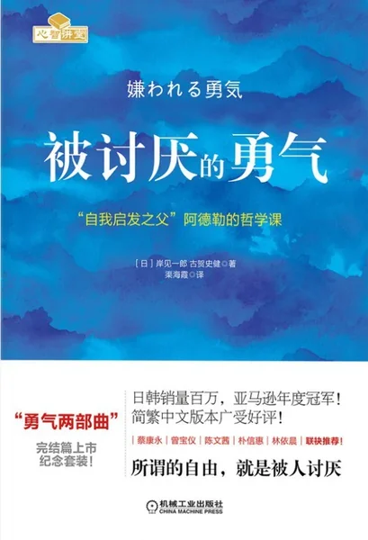
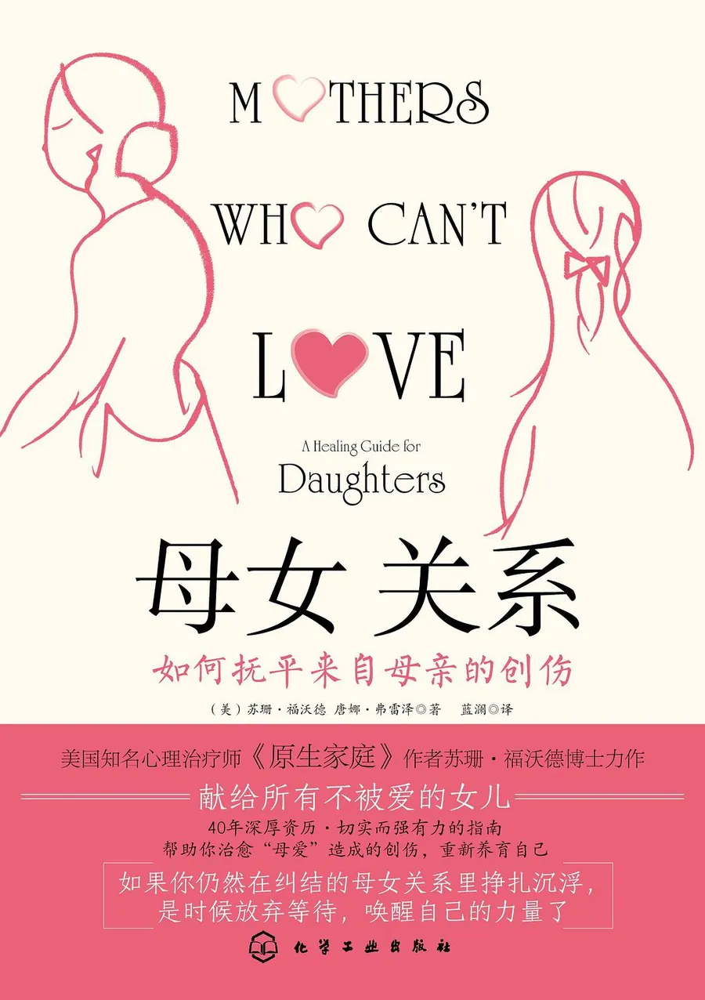
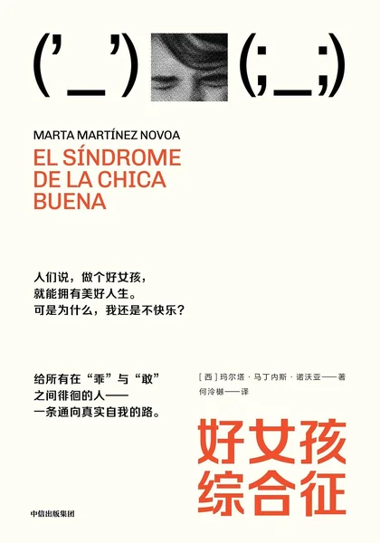
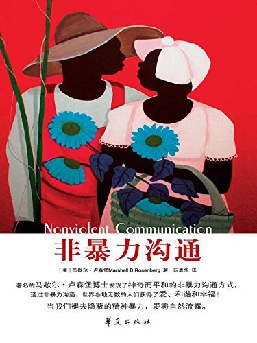
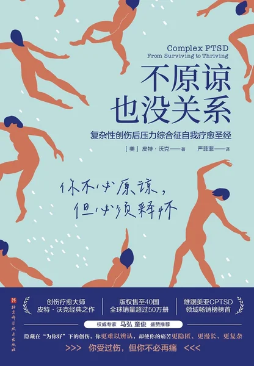

愿你在觉察与自愈的路上，一点点把自己找回来 · 世界很大，很高兴在这里遇见你
同步自豆瓣豆列 · 更新于2026年11月 | 由「淀粉肠狂热粉」维护
复杂性创伤后应激障碍（CPTSD）常常源于长期的情感忽视或伤害，它不是矫情，也不是脆弱。作为一个正在觉察和自愈路上的人，我把这个过程中对我真正有帮助的书籍整理成了这份书单。
下方内容同步自我的豆瓣豆列：《关于cptsd：觉察和自愈》（书籍及我的评语），点击任意书名或封面可跳转豆瓣页面。书单会随着我的阅读持续更新。
共 14 本，按豆列顺序排列。有评语的是我读过的书，点击书名或封面可跳转豆瓣页面。










愿你在觉察与自愈的路上，一点点把自己找回来 · 世界很大，很高兴在这里遇见你
同步自豆瓣豆列 · 更新于2026年11月 | 由「淀粉肠狂热粉」维护